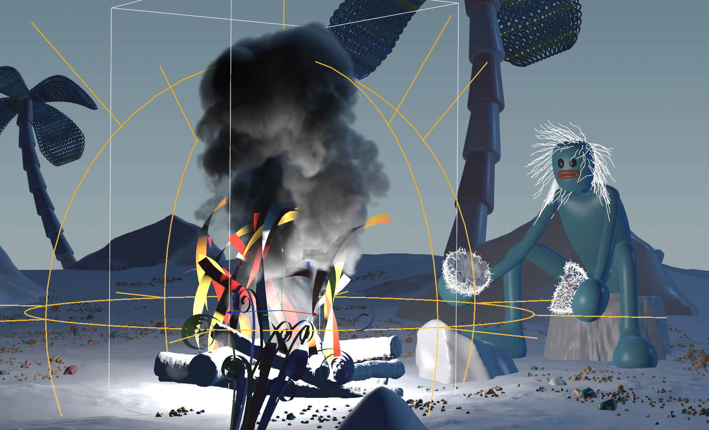

This is my grad film 'Gone Fishin' for the RMIT Bachelor of Animation, completed in June 2021. It was a huge effort but I loved making it - I used Blender to animate, and Houdini for FX and layout/lighting/rendering (vray).
Featured at MIAF International Animation Day 2022. https://miaf.net/events/australian-student-showcase_iad2022/


Development Pictures
Houdini campfire FX

Advecting fluff geometry with a hidden pyro sim.
Houdini beachtank sim.